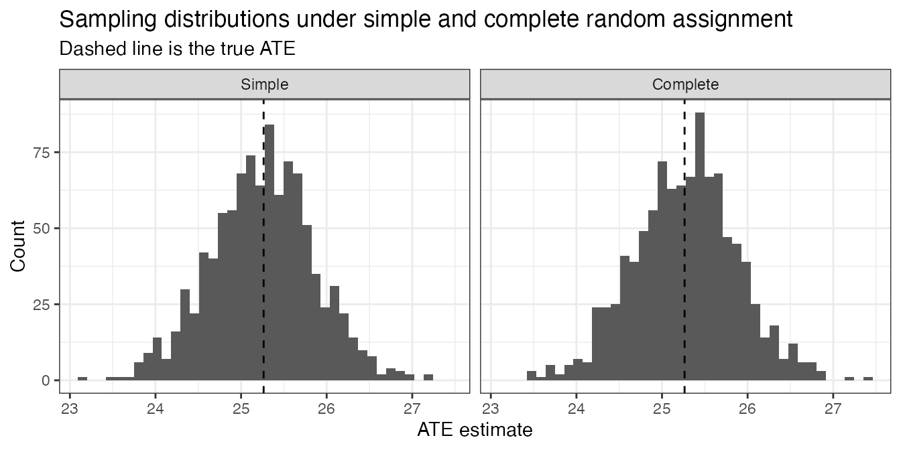
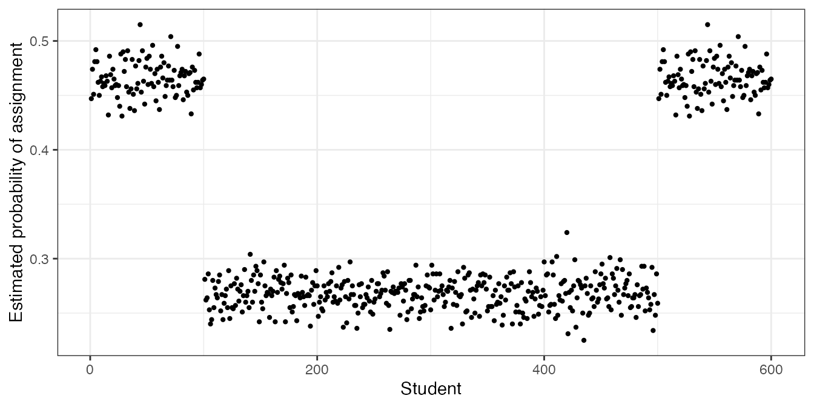

Design and Analysis of Experiments with randomizr
Alexander Coppock
Source:vignettes/randomizr_vignette.Rmd
randomizr_vignette.Rmdrandomizr is a small package for R that simplifies the design and analysis of randomized experiments. In particular, it makes the random assignment procedure transparent, flexible, and most importantly reproducible. By the time that many experiments are written up and made public, the process by which some units received treatments is lost or imprecisely described. The randomizr package makes it easy for even the most forgetful of researchers to generate error-free, reproducible random assignments.
A hazy understanding of the random assignment procedure leads to two main problems at the analysis stage. First, units may have different probabilities of assignment to treatment. Analyzing the data as though they have the same probabilities of assignment leads to biased estimates of the treatment effect. Second, units are sometimes assigned to treatment as a cluster. For example, all the students in a single classroom may be assigned to the same intervention together. If the analysis ignores the clustering in the assignments, estimates of average causal effects and the uncertainty attending them may be incorrect.
A hypothetical experiment
Throughout this vignette, we’ll pretend we’re conducting an
experiment among the 592 individuals in the built-in
HairEyeColor dataset. As we’ll see, there are many ways to
randomly assign subjects to treatments. We’ll step through five common
designs, each associated with one of five randomizr
functions: simple_ra(), complete_ra(),
block_ra(), cluster_ra(), and
block_and_cluster_ra(). A sixth function,
balanced_ra(), is experimental. It draws assignment with
tight targets and is illustrated briefly after the blocked design.
The dataset ships with R as a three-way contingency table (see
?HairEyeColor); converting it to a data frame gives one row
per type of subject, with a count of how many subjects
are of that type.
data(HairEyeColor)
HairEyeColor |>
as.data.frame() |>
as_tibble()
#> # A tibble: 32 × 4
#> Hair Eye Sex Freq
#> <fct> <fct> <fct> <dbl>
#> 1 Black Brown Male 32
#> 2 Brown Brown Male 53
#> 3 Red Brown Male 10
#> 4 Blond Brown Male 3
#> 5 Black Blue Male 11
#> 6 Brown Blue Male 50
#> 7 Red Blue Male 10
#> 8 Blond Blue Male 30
#> 9 Black Hazel Male 10
#> 10 Brown Hazel Male 25
#> # ℹ 22 more rowsWe first need to transform this into a dataset in which each row describes an individual subject.
# uncount() repeats each row Freq times, which is exactly what we want
hec <-
HairEyeColor |>
as.data.frame() |>
as_tibble() |>
uncount(Freq) |>
select(Hair, Eye, Sex)
N <- nrow(hec)
hec
#> # A tibble: 592 × 3
#> Hair Eye Sex
#> <fct> <fct> <fct>
#> 1 Black Brown Male
#> 2 Black Brown Male
#> 3 Black Brown Male
#> 4 Black Brown Male
#> 5 Black Brown Male
#> 6 Black Brown Male
#> 7 Black Brown Male
#> 8 Black Brown Male
#> 9 Black Brown Male
#> 10 Black Brown Male
#> # ℹ 582 more rowsTypically, researchers know some basic information about their subjects before deploying treatment. For example, they usually know how many subjects there are in the experimental sample (N), and they usually know some basic demographic information about each subject.
Our new dataset has 592 subjects. We have three pretreatment
covariates, Hair, Eye, and Sex,
which describe the hair color, eye color, and gender of each
subject.
We now need to create simulated potential outcomes. We’ll
call the untreated outcome Y0 and we’ll call the treated
outcome Y1. Imagine that in the absence of any
intervention, the outcome (Y0) is correlated with our
pretreatment covariates. Imagine further that the effectiveness of the
program varies according to these covariates, i.e., the difference
between Y1 and Y0 is correlated with the
pretreatment covariates.
If we were really running an experiment, we would only observe either
Y0 or Y1 for each subject, but since we are
simulating, we generate both. Our inferential target is the average
treatment effect (ATE), which is defined as the average difference
between Y0 and Y1.
# Set a seed for reproducibility
set.seed(343)
# Create untreated and treated outcomes for all subjects
hec <-
hec |>
mutate(
Y0 = rnorm(n = N,
mean = 2 * as.numeric(Hair) - 4 * as.numeric(Eye) - 6 * as.numeric(Sex),
sd = 5),
Y1 = Y0 + 6 * as.numeric(Hair) + 4 * as.numeric(Eye) + 2 * as.numeric(Sex)
)
# Calculate true ATE
hec |> summarize(ATE = mean(Y1 - Y0))
#> # A tibble: 1 × 1
#> ATE
#> <dbl>
#> 1 25.3We are now ready to allocate treatment assignments to subjects. Let’s start by contrasting simple and complete random assignment.
Simple random assignment
Simple random assignment assigns all subjects to treatment with an equal probability by flipping a (weighted) coin for each subject. The main trouble with simple random assignment is that the number of subjects assigned to treatment is itself a random number: depending on the random assignment, a different number of subjects might be assigned to each group.
The simple_ra() function has one required argument
N, the total number of subjects. If no other arguments are
specified, simple_ra() assumes a two-group design and a
0.50 probability of assignment.
| 0 | 1 |
|---|---|
| 301 | 291 |
To change the probability of assignment, specify the
prob argument:
| 0 | 1 |
|---|---|
| 402 | 190 |
If you specify num_arms without changing
prob_each, simple_ra() will assume equal
probabilities across all arms.
| T1 | T2 | T3 |
|---|---|---|
| 191 | 215 | 186 |
You can also just specify the probabilities of your multiple arms. The probabilities must sum to 1.
| T1 | T2 | T3 |
|---|---|---|
| 118 | 119 | 355 |
You can also name your treatment arms.
Z <- simple_ra(N = N,
prob_each = c(0.2, 0.2, 0.6),
conditions = c("control", "placebo", "treatment"))
table(Z)| control | placebo | treatment |
|---|---|---|
| 132 | 108 | 352 |
Complete random assignment
Complete random assignment is very similar to simple random assignment, except that the researcher can specify exactly how many units are assigned to each condition.
The syntax for complete_ra() is very similar to that of
simple_ra(). The argument m is the number of
units assigned to treatment in two-arm designs; it is analogous to
simple_ra()’s prob. Similarly, the argument
m_each is analogous to prob_each.
If you only specify N, complete_ra()
assigns exactly half of the subjects to treatment.
Z <- complete_ra(N = N)
table(Z)| 0 | 1 |
|---|---|
| 296 | 296 |
To change the number of units assigned, specify the m
argument:
Z <- complete_ra(N = N, m = 200)
table(Z)| 0 | 1 |
|---|---|
| 392 | 200 |
If you specify multiple arms, complete_ra() will assign
an equal (within rounding) number of units to treatment.
Z <- complete_ra(N = N, num_arms = 3)
table(Z)| T1 | T2 | T3 |
|---|---|---|
| 197 | 198 | 197 |
You can also specify exactly how many units should be assigned to
each arm. The total of m_each must equal
N.
Z <- complete_ra(N = N, m_each = c(100, 200, 292))
table(Z)| T1 | T2 | T3 |
|---|---|---|
| 100 | 200 | 292 |
You can also name your treatment arms.
Z <- complete_ra(N = N,
m_each = c(100, 200, 292),
conditions = c("control", "placebo", "treatment"))
table(Z)| control | placebo | treatment |
|---|---|---|
| 100 | 200 | 292 |
Simple and complete random assignment compared
If the number of units is known beforehand,
complete_ra() is preferred, for two reasons:
- Researchers can plan exactly how many treatments will be deployed.
- The standard errors associated with complete random assignment are generally smaller, increasing experimental power.
Since you need to know N beforehand in order to use
simple_ra(), it may seem like a useless function.
Sometimes, however, the random assignment isn’t directly in the
researcher’s control. For example, when deploying a survey experiment on
a platform like Qualtrics, simple random assignment is the only
possibility due to the inflexibility of the built-in random assignment
tools. When reconstructing the random assignment for analysis after the
experiment has been conducted, simple_ra() provides a
convenient way to do so.
To compare the two designs, let’s conduct a small simulation with our
HairEyeColor dataset. We draw a fresh assignment many times
over, estimate the ATE each time, and collect the estimates. The spread
of those estimates is the sampling distribution.
sims <- 1000
simulate_once <- function(i) {
hec <-
hec |>
mutate(
# Conduct both kinds of random assignment
Z_simple = simple_ra(N = N),
Z_complete = complete_ra(N = N),
# Reveal observed potential outcomes
Y_simple = if_else(Z_simple == 1, Y1, Y0),
Y_complete = if_else(Z_complete == 1, Y1, Y0)
)
fit_simple <- difference_in_means(Y_simple ~ Z_simple, data = hec)
fit_complete <- difference_in_means(Y_complete ~ Z_complete, data = hec)
bind_rows(
tidy(fit_simple) |> filter(term == "Z_simple") |> mutate(design = "Simple"),
tidy(fit_complete) |> filter(term == "Z_complete") |> mutate(design = "Complete")
)
}
estimates <- map(1:sims, simulate_once) |> list_rbind()The standard error of an estimate is defined as the standard
deviation of the sampling distribution of the estimator. When standard
errors are estimated (i.e., by using the summary() command
on a model fit), they are estimated using some approximation. This
simulation allows us to measure the standard error directly, since
estimates describes the sampling distribution of each
design.
estimates |>
group_by(design) |>
summarize(empirical_se = sd(estimate))
#> # A tibble: 2 × 2
#> design empirical_se
#> <chr> <dbl>
#> 1 Complete 0.604
#> 2 Simple 0.602Plotting the two sampling distributions side by side shows how similar they are:
gg_df <-
estimates |>
mutate(design = factor(design, levels = c("Simple", "Complete")))
ggplot(gg_df, aes(x = estimate)) +
geom_histogram(bins = 40) +
geom_vline(xintercept = mean(hec$Y1 - hec$Y0), linetype = "dashed") +
facet_wrap(~design) +
labs(x = "ATE estimate", y = "Count",
title = "Sampling distributions under simple and complete random assignment",
subtitle = "Dashed line is the true ATE") +
theme_bw() +
theme(legend.position = "none")
Both designs are unbiased: each distribution is centered on the true ATE. Their spreads are also nearly identical, which may be surprising given that complete random assignment is supposed to be the more precise design.
It is more precise, but by very little at this sample size. At
N = 592 the true reduction in sampling variance is about
0.2%, which is far too small to see in 1,000 simulations: the simulation
error in this comparison is several percentage points, so whichever
design comes out ahead in the printed standard errors above, it came out
ahead by chance.
The advantage comes from one thing. Simple random assignment does not
fix the number of treated units: m is a binomial draw that
lands near N/2 but wanders around it. Complete random
assignment fixes m exactly, and the variance that removes
shrinks like 1/N, which is why it is invisible at
N = 592. With only 10 subjects, the wandering is plain to
see.
# how many of 10 subjects end up treated, over many draws
m_simple <- replicate(sims, sum(simple_ra(N = 10)))
m_complete <- replicate(sims, sum(complete_ra(N = 10)))
table(m_simple)
table(m_complete)| 0 | 1 | 2 | 3 | 4 | 5 | 6 | 7 | 8 | 9 | 10 |
|---|---|---|---|---|---|---|---|---|---|---|
| 1 | 11 | 39 | 136 | 203 | 245 | 215 | 95 | 42 | 11 | 2 |
| 5 |
|---|
| 1000 |
That spread is the source of the extra variance, and it shrinks as
N grows. The true reduction in sampling variance from using
complete_ra() instead of simple_ra() on these
potential outcomes is about 13% at N = 10, 3.6% at
N = 30, and 0.2% at N = 592. Repeating the
sampling-distribution exercise on a small sample measures that gain
directly. We use the first 30 subjects: few enough that the gain is
visible, and many enough that no draw is so lopsided that a standard
error cannot be calculated from it. A 3.6% difference in variance is
only a 1.8% difference in the standard error, so it takes more draws to
resolve than the N = 592 comparison did.
set.seed(20260824)
sims_small <- 10000
hec_small <- hec |> slice(1:30)
simulate_once_small <- function(i) {
hec_small <-
hec_small |>
mutate(
# Conduct both kinds of random assignment
Z_simple = simple_ra(N = 30),
Z_complete = complete_ra(N = 30),
# Reveal observed potential outcomes
Y_simple = if_else(Z_simple == 1, Y1, Y0),
Y_complete = if_else(Z_complete == 1, Y1, Y0)
)
fit_simple <- difference_in_means(Y_simple ~ Z_simple, data = hec_small)
fit_complete <- difference_in_means(Y_complete ~ Z_complete, data = hec_small)
bind_rows(
tidy(fit_simple) |> filter(term == "Z_simple") |> mutate(design = "Simple"),
tidy(fit_complete) |> filter(term == "Z_complete") |> mutate(design = "Complete")
)
}
estimates_small <- map(1:sims_small, simulate_once_small) |> list_rbind()
estimates_small |>
group_by(design) |>
summarize(empirical_se = sd(estimate))
#> # A tibble: 2 × 2
#> design empirical_se
#> <chr> <dbl>
#> 1 Complete 1.64
#> 2 Simple 1.70The simulated gap is a little wider than the true one, which is what
a percent or two of remaining simulation error looks like. That is the
practical case for complete_ra(): not that it buys a lot of
precision in a large sample, but that it removes an avoidable source of
variability and guarantees the number of units you can afford to
treat.
Block random assignment
Block random assignment (sometimes known as stratified random assignment) is a powerful tool when used well. In this design, subjects are sorted into blocks (strata) according to their pre-treatment covariates, and then complete random assignment is conducted within each block. For example, a researcher might block on gender, assigning exactly half of the men and exactly half of the women to treatment.
There are two main reasons to block. The first is to signal to future readers that treatment effect heterogeneity may be of interest: is the treatment effect different for men versus women? Of course, such heterogeneity could be explored if complete random assignment had been used, but blocking on a covariate defends a researcher (somewhat) against claims of data dredging. The second reason is to increase precision. If the blocking variables are predictive of the outcome (i.e., they are correlated with the outcome), then blocking may help to decrease sampling variability. It’s important, however, not to overstate these advantages. The gains from a blocked design can often be realized through covariate adjustment alone.
Blocking can also produce complications for estimation, because it can give different subjects different probabilities of assignment. This complication is typically addressed in one of two ways: “controlling for blocks” in a regression context, or inverse probability weights (IPW), in which units are weighted by the inverse of the probability that the unit is in the condition that it is in.
The only required argument to block_ra() is
blocks, which is a vector of length N that
describes which block a unit belongs to. blocks can be a
factor, character, or numeric variable. If no other arguments are
specified, block_ra() assigns an approximately equal
proportion of each block to treatment.
| Black | Brown | Red | Blond | |
|---|---|---|---|---|
| 0 | 54 | 143 | 36 | 63 |
| 1 | 54 | 143 | 35 | 64 |
For multiple treatment arms, use the num_arms argument,
with or without the conditions argument
| Black | Brown | Red | Blond | |
|---|---|---|---|---|
| T1 | 36 | 96 | 23 | 42 |
| T2 | 36 | 95 | 24 | 43 |
| T3 | 36 | 95 | 24 | 42 |
Z <- block_ra(blocks = hec$Hair,
conditions = c("Control", "Placebo", "Treatment"))
table(Z, hec$Hair)| Black | Brown | Red | Blond | |
|---|---|---|---|---|
| Control | 36 | 96 | 24 | 42 |
| Placebo | 36 | 95 | 24 | 42 |
| Treatment | 36 | 95 | 23 | 43 |
block_ra() provides a number of ways to adjust the
number of subjects assigned to each condition. The
prob_each argument describes what proportion of each block
should be assigned to each treatment arm. Note, of course, that
block_ra() still uses complete random assignment within
each block; the appropriate number of units to assign to treatment
within each block is automatically determined.
| Black | Brown | Red | Blond | |
|---|---|---|---|---|
| 0 | 32 | 85 | 21 | 38 |
| 1 | 76 | 201 | 50 | 89 |
For finer control, use the block_m_each argument, which
takes a matrix with as many rows as there are blocks, and as many
columns as there are treatment conditions. Remember that the rows are in
the same order as sort(unique(blocks)), a command that is
good to run before constructing a block_m_each matrix.
sort(unique(hec$Hair))
#> [1] Black Brown Red Blond
#> Levels: Black Brown Red Blond
block_m_each <- rbind(c(78, 30),
c(186, 100),
c(51, 20),
c(87, 40))
block_m_each
#> [,1] [,2]
#> [1,] 78 30
#> [2,] 186 100
#> [3,] 51 20
#> [4,] 87 40| Black | Brown | Red | Blond | |
|---|---|---|---|---|
| 0 | 78 | 186 | 51 | 87 |
| 1 | 30 | 100 | 20 | 40 |
In the example above, the different blocks have different
probabilities of assignment to treatment. In this case, people with
Black hair have a 30/108 = 27.8% chance of being treated, those with
Brown hair have 100/286 = 35.0% chance, etc. Left unaddressed, this
discrepancy could bias treatment effects. We can see this directly with
the declare_ra() function.
declaration <-
declare_ra(blocks = Hair, block_m_each = block_m_each, data = hec)
# show the probability that each unit is assigned to each condition
head(declaration$probabilities_matrix)| prob_0 | prob_1 |
|---|---|
| 0.72 | 0.28 |
| 0.72 | 0.28 |
| 0.72 | 0.28 |
| 0.72 | 0.28 |
| 0.72 | 0.28 |
| 0.72 | 0.28 |
# Show that the probability of treatment is different within block
table(hec$Hair, round(declaration$probabilities_matrix[, 2], 3))| 0.278 | 0.282 | 0.315 | 0.35 | |
|---|---|---|---|---|
| Black | 108 | 0 | 0 | 0 |
| Brown | 0 | 0 | 0 | 286 |
| Red | 0 | 71 | 0 | 0 |
| Blond | 0 | 0 | 127 | 0 |
There are two common ways to address this problem: LSDV (Least-Squares Dummy Variable, also known as “control for blocks”) or IPW (Inverse-probability weights).
The following code snippet shows how to use either the LSDV approach
or the IPW approach. A note for scrupulous readers: the estimands of
these two approaches are subtly different from one another. The LSDV
approach estimates the average block-level treatment
effect. The IPW approach estimates the average
individual-level treatment effect. They can be
different. Since the average block-level treatment effect is not what
most people have in mind when thinking about causal effects, analysts
using this approach should present both. The
obtain_condition_probabilities() function used to calculate
the probabilities of assignment is explained below.
hec <-
hec |>
mutate(
Z_blocked = block_ra(blocks = Hair, block_m_each = block_m_each),
Y_blocked = if_else(Z_blocked == 1, Y1, Y0),
cond_prob = obtain_condition_probabilities(declaration, Z_blocked),
IPW_weights = 1 / cond_prob
)
fit_LSDV <- lm_robust(Y_blocked ~ Z_blocked + Hair, data = hec)
fit_IPW <- lm_robust(Y_blocked ~ Z_blocked, weights = IPW_weights, data = hec)
tidy(fit_LSDV)| term | estimate | std.error | statistic | p.value | conf.low | conf.high | df | outcome |
|---|---|---|---|---|---|---|---|---|
| (Intercept) | -15.6 | 0.74 | -21.2 | 0 | -17.06 | -14.2 | 587 | Y_blocked |
| Z_blocked | 23.8 | 0.64 | 37.4 | 0 | 22.58 | 25.1 | 587 | Y_blocked |
| HairBrown | 2.3 | 0.83 | 2.8 | 0 | 0.72 | 4.0 | 587 | Y_blocked |
| HairRed | 5.8 | 1.06 | 5.4 | 0 | 3.66 | 7.8 | 587 | Y_blocked |
| HairBlond | 9.1 | 1.05 | 8.7 | 0 | 6.99 | 11.1 | 587 | Y_blocked |
tidy(fit_IPW)| term | estimate | std.error | statistic | p.value | conf.low | conf.high | df | outcome |
|---|---|---|---|---|---|---|---|---|
| (Intercept) | -12 | 0.33 | -35 | 0 | -13 | -11 | 590 | Y_blocked |
| Z_blocked | 24 | 0.80 | 30 | 0 | 22 | 25 | 590 | Y_blocked |
Blocks can be built by hand from the covariates. In the
HairEyeColor dataset, we could make a block for each unique
combination of hair color, eye color, and sex.
block_id <- paste(hec$Hair, hec$Eye, hec$Sex, sep = "_")
Z <- block_ra(blocks = block_id)
head(table(block_id, Z))| 0 | 1 | |
|---|---|---|
| Black_Blue_Female | 5 | 4 |
| Black_Blue_Male | 6 | 5 |
| Black_Brown_Female | 18 | 18 |
| Black_Brown_Male | 16 | 16 |
| Black_Green_Female | 1 | 1 |
| Black_Green_Male | 2 | 1 |
An alternative is to use the blockTools
package, which constructs matched pairs, trios, quartets, etc. from
pretreatment covariates. Two of its functions do the work here:
blockTools::block() builds the blocks, and
blockTools::createBlockIDs() turns them into a blocking
variable of length N.
library(blockTools)
# blockTools requires that all variables be numeric
numeric_mat <- model.matrix(~ Hair + Eye + Sex, data = hec)[, -1]
# blockTools also requires an id variable
df_forBT <- data.frame(id_var = 1:nrow(numeric_mat), numeric_mat)
# Conducting the actual blocking: let's make trios
out <- blockTools::block(df_forBT,
n.tr = 3,
id.vars = "id_var",
block.vars = colnames(df_forBT)[-1])
# Extract the block_ids
hec <- hec |>
mutate(block_id = blockTools::createBlockIDs(out, df_forBT, id.var = "id_var"))
# Conduct actual random assignment with randomizr
Z_blocked <- block_ra(blocks = hec$block_id, num_arms = 3)
head(table(hec$block_id, Z_blocked))A note for blockTools users: that package also has an
assignment function. My preference is to extract the blocking variable,
then conduct the assignment with block_ra(), so that fewer
steps are required to reconstruct the random assignment or generate new
random assignments for a randomization inference procedure.
Balanced random assignment
balanced_ra() is a new addition to the suite and still
experimental. It is used for settings where randomization is constrained
to hit tight targets.
To illustrate, say there are six units, two blocks of three, half
assigned to treatment. complete_ra(N = 6, m = 3) treats
three units every time, but a block can receive zero or three.
block_ra ensures that 1 or 2 are treated in each block; but
overall there is no guarantee that 3 will be treated. The twin targets
of 3 overall and 1 to 2 in each block cannot be hit by either of
these.
blocks <- rep(1:2, each = 3)
Z <- balanced_ra(blocks = blocks)
table(blocks, Z)| 0 | 1 |
|---|---|
| 1 | 2 |
| 2 | 1 |
With balanced_ra however we see that every draw treats
three units overall and one or two in each block. Declare the design
with declare_ra(..., ra_type = "balanced"). The balanced_ra vignette has the details.
For a still simpler example, consider two units with target
assignment probabilities of 0.6, and 0.9 and want the number assigned to
be close to 0.6 + 0.9 = 1.5. This cannot be achieved by
simple_ra or complete_ra, but
balanced_ra handles it easily, in particular by making sure
that the two units are never both assigned to control at the same
time.
Clustered assignment
Clustered assignment is unfortunate. If you can avoid assigning subjects to treatments by cluster, you should. Sometimes, clustered assignment is unavoidable. Some common situations include:
- Housemates in households: whole households are assigned to treatment or control
- Students in classrooms: whole classrooms are assigned to treatment or control
- Residents in towns or villages: whole communities are assigned to treatment or control
Clustered assignment decreases the effective sample size of an experiment. In the extreme case when outcomes are perfectly correlated with clusters, the experiment has an effective sample size equal to the number of clusters. When outcomes are perfectly uncorrelated with clusters, the effective sample size is equal to the number of subjects. Almost all cluster-assigned experiments fall somewhere in the middle of these two extremes.
The only required argument for the cluster_ra() function
is the clusters argument, which is a vector of length
N that indicates which cluster each subject belongs to.
Let’s pretend that for some reason, we have to assign treatments
according to the unique combinations of hair color, eye color, and
gender.
hec <-
hec |>
mutate(cluster_id = paste(Hair, Eye, Sex, sep = "_"))
Z_clust <- cluster_ra(clusters = hec$cluster_id)
head(table(hec$cluster_id, Z_clust))| 0 | 1 | |
|---|---|---|
| Black_Blue_Female | 9 | 0 |
| Black_Blue_Male | 11 | 0 |
| Black_Brown_Female | 0 | 36 |
| Black_Brown_Male | 32 | 0 |
| Black_Green_Female | 0 | 2 |
| Black_Green_Male | 0 | 3 |
The table shows that each cluster is either assigned to treatment or control. No two units within the same cluster are assigned to different conditions.
As with all functions in randomizr, you can specify
multiple treatment arms in a variety of ways:
Z_clust <- cluster_ra(clusters = hec$cluster_id, num_arms = 3)
head(table(hec$cluster_id, Z_clust))| T1 | T2 | T3 | |
|---|---|---|---|
| Black_Blue_Female | 0 | 0 | 9 |
| Black_Blue_Male | 0 | 0 | 11 |
| Black_Brown_Female | 0 | 36 | 0 |
| Black_Brown_Male | 32 | 0 | 0 |
| Black_Green_Female | 0 | 2 | 0 |
| Black_Green_Male | 0 | 3 | 0 |
… or using conditions
Z_clust <- cluster_ra(clusters = hec$cluster_id,
conditions = c("Control", "Placebo", "Treatment"))
head(table(hec$cluster_id, Z_clust))| Control | Placebo | Treatment | |
|---|---|---|---|
| Black_Blue_Female | 9 | 0 | 0 |
| Black_Blue_Male | 11 | 0 | 0 |
| Black_Brown_Female | 0 | 36 | 0 |
| Black_Brown_Male | 0 | 0 | 32 |
| Black_Green_Female | 0 | 2 | 0 |
| Black_Green_Male | 0 | 3 | 0 |
… or using m_each, which describes how many clusters
should be assigned to each condition. m_each must sum to
the number of clusters.
Z_clust <- cluster_ra(clusters = hec$cluster_id, m_each = c(5, 15, 12))
head(table(hec$cluster_id, Z_clust))| T1 | T2 | T3 | |
|---|---|---|---|
| Black_Blue_Female | 0 | 9 | 0 |
| Black_Blue_Male | 0 | 0 | 11 |
| Black_Brown_Female | 0 | 36 | 0 |
| Black_Brown_Male | 0 | 32 | 0 |
| Black_Green_Female | 0 | 2 | 0 |
| Black_Green_Male | 0 | 3 | 0 |
Blocked and clustered assignment
The power of clustered experiments can sometimes be improved through blocking. In this scenario, whole clusters are members of a particular block: imagine villages nested within discrete regions, or classrooms nested within discrete schools.
As an example, let’s group our clusters into blocks by size using
dplyr.
cluster_level_df <-
hec |>
group_by(cluster_id) |>
summarize(cluster_size = n()) |>
arrange(cluster_size) |>
mutate(block_id = paste0("block_", sprintf("%02d", rep(1:16, each = 2))))
hec <- left_join(hec, cluster_level_df, by = "cluster_id")
Z <- block_and_cluster_ra(clusters = hec$cluster_id, blocks = hec$block_id)
head(table(hec$cluster_id, Z))
head(table(hec$block_id, Z))| 0 | 1 | |
|---|---|---|
| Black_Blue_Female | 9 | 0 |
| Black_Blue_Male | 0 | 11 |
| Black_Brown_Female | 36 | 0 |
| Black_Brown_Male | 0 | 32 |
| Black_Green_Female | 2 | 0 |
| Black_Green_Male | 0 | 3 |
| 0 | 1 | |
|---|---|---|
| block_01 | 2 | 3 |
| block_02 | 4 | 3 |
| block_03 | 5 | 5 |
| block_04 | 5 | 7 |
| block_05 | 7 | 7 |
| block_06 | 7 | 7 |
Calculating probabilities of assignment
All of the random assignment functions in randomizr
assign units to treatment with known (if sometimes complicated)
probabilities. The declare_ra() and
obtain_condition_probabilities() functions calculate these
probabilities according to the parameters of your experimental
design.
Let’s take a look at the block random assignment we used before.
block_m_each <- rbind(c(78, 30),
c(186, 100),
c(51, 20),
c(87, 40))
Z <- block_ra(blocks = hec$Hair, block_m_each = block_m_each)
table(Z, hec$Hair)| Black | Brown | Red | Blond | |
|---|---|---|---|---|
| 0 | 78 | 186 | 51 | 87 |
| 1 | 30 | 100 | 20 | 40 |
In order to calculate the probabilities of assignment, we call the
declare_ra() function with the same design arguments we
used for the block_ra() call. The declaration
object contains a matrix of probabilities of assignment:
declaration <-
declare_ra(blocks = Hair, block_m_each = block_m_each, data = hec)
prob_mat <- declaration$probabilities_matrix
head(prob_mat)| prob_0 | prob_1 |
|---|---|
| 0.72 | 0.28 |
| 0.72 | 0.28 |
| 0.72 | 0.28 |
| 0.72 | 0.28 |
| 0.72 | 0.28 |
| 0.72 | 0.28 |
The prob_mat object has N rows and as many
columns as there are treatment conditions, in this case 2.
In order to use inverse-probability weights, we need to know the
probability of each unit being in the condition that it is
in. For each unit, we need to pick the appropriate probability.
The obtain_condition_probabilities() function handles this
bookkeeping automatically.
cond_prob <- obtain_condition_probabilities(declaration, Z)
table(round(cond_prob, 2), Z)| 0 | 1 | |
|---|---|---|
| 0.28 | 0 | 50 |
| 0.31 | 0 | 40 |
| 0.35 | 0 | 100 |
| 0.65 | 186 | 0 |
| 0.69 | 87 | 0 |
| 0.72 | 129 | 0 |
Best practices
Random assignment procedure = Random assignment function
Random assignment procedures are often described as a series of steps that are manually carried out by the researcher. A procedure written that way can only be carried out by hand, and two readers of the same description will often carry it out differently. In order to make the procedure reproducible, these steps need to be translated into a function that returns a different random assignment each time it is called. Once the procedure is a function, it can be run again by anyone, its probabilities of assignment can be recovered by simulation, and the randomization distribution needed for randomization inference can be generated by calling it a few thousand times.
For example, consider the following procedure for randomly allocating school vouchers.
- Every eligible student’s name is put on a list
- Each name is assigned a random number
- Balls with the numbers associated with all students are put in an urn.
- Then the urn is “shuffled”
- Students’ names are drawn one by one from the urn until all slots are given out.
- If one sibling in a family wins, all other siblings automatically win too.
If we write such a procedure into a function, it might look like this:
# 400 families have 1 child in the lottery, 100 families have 2
family_id <- c(sprintf("%03d", 1:500), sprintf("%03d", 1:100))
school_ra <- function(m) {
N <- length(family_id)
random_number <- sample(1:N, replace = FALSE)
Z <- rep(0, N)
i <- 1
while (sum(Z) < m) {
Z[family_id == family_id[random_number[i]]] <- 1
i <- i + 1
}
return(Z)
}
Z <- school_ra(200)
table(Z)| 0 | 1 |
|---|---|
| 400 | 200 |
This assignment procedure is complicated by the sibling rule, which
has two effects: first, students are cluster-assigned by family, and
second, the probability of assignment varies student to student.
Obviously, families who have two children in the lottery have a higher
probability of winning the lottery because they effectively have two
“tickets.” There may be better ways of running this assignment procedure
(for example, with cluster_ra()), but the purpose of this
example is to show how complicated real-world procedures can be
written up in a simple function. With this function, the random
assignment procedure can be reproduced exactly, the complicated
probabilities of assignment can be calculated, and the analysis is
greatly simplified.
Check probabilities of assignment directly
For many designs, the probability of assignment to treatment can be calculated analytically. For example, in a completely randomized design with 200 units, 60 of which are assigned to treatment, the probability is exactly 0.30 for all units. However, in more complicated designs (such as the schools example described above), analytic probabilities are difficult to calculate. In such a situation, an easy way to obtain the probabilities of assignment is through simulation.
- Call your random assignment function an approximately infinite number of times (about 10,000 for most purposes).
- Count how often each unit is assigned to each treatment arm.
Z_matrix <- replicate(1000, school_ra(200))
gg_df <- tibble(student = seq_len(nrow(Z_matrix)),
prob = rowMeans(Z_matrix))
ggplot(gg_df, aes(x = student, y = prob)) +
geom_point(size = 0.8) +
labs(x = "Student", y = "Estimated probability of assignment") +
theme_bw()
The plot shows that the students who have a sibling in the lottery have a higher probability of assignment. The more simulations, the more precise the estimate of the probability of assignment.
Save your random assignment
Whenever you conduct a random assignment for use in an experiment, save it! At a minimum, the random assignment should be saved with an id variable in a csv.
hec <-
hec |>
mutate(
Z_complete = complete_ra(N = N,
m_each = c(100, 200, 292),
conditions = c("control", "placebo", "treatment")),
id_var = row_number()
)
hec |>
select(id_var, Z_complete) |>
readr::write_csv("MyRandomAssignment.csv")